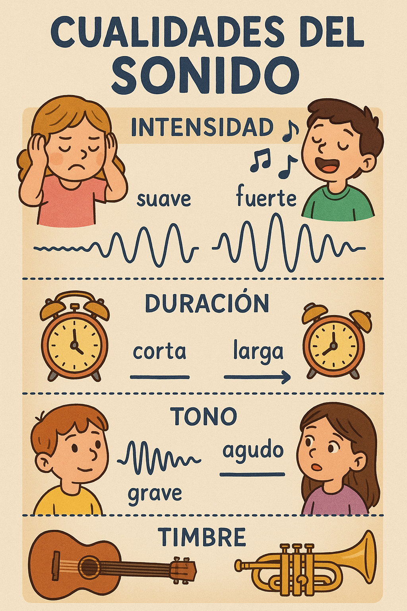

Aprende con esta infografía
Esta infografía es como un cartel resumen que te ayudará a entender y recordar de forma rápida las cualidades del sonido. Está llena de colores, dibujos y ejemplos fáciles de entender.
Aquí tienes un resumen visual con las cuatro cualidades del sonido explicado de forma clara y sencilla.
✅ Léela con calma.
✅ Observa los ejemplos.
✅ Piensa si podrías añadir alguno más de tu vida diaria.
Te recomiendo que la leas varias veces y que la tengas a mano mientras ves el vídeo o haces otras actividades.
¡Será tu aliada para convertirte en un experto o experta en sonidos!

Este recurso educativo ha sido creado por Leticia Saorín y se encuentra bajo una Licencia Creative Commons Atribución-NoComercial-CompartirIgual 4.0 Internacional.